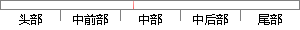

文献（Hornik et al.
片段位置图

相似结果|
相似片段 1：]. Pediatr Infect Dis J2012;31(8):799-802.[20] Hornik CP,Benjamin DK,Becker KC,et al. Use of the complete
相似片段 2： sepsis [J]. Pediatrics, 2012, 129(5): 1006-1015.[16] Hornik CP, Benjamin DK, Becker KC, et al. Use
相似片段 3： globulin- like region [J]. J Neurosci, 2010, 30(46): 15521-15534.[20] Franke TF, Hornik CP, Segev L, et al.
相似片段 4： networkused in this paper is illustrated in Fig. 1 (Hornik et al.,1989). The network has an input layer
|
※ 片段修改建议 ※
近似词参考：